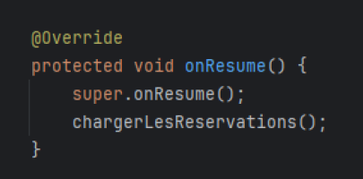

Ticket 12 – Bug au niveau de la liste des Réservations
Branche utilisée : iteration3_ticket12.
Ce ticket corrige un problème de rafraîchissement de la liste des réservations après suppression.
Solution apportée
Une méthode onResume() a été ajoutée dans l’activité ListReservationActivity.
Cette méthode permet de rafraîchir automatiquement la liste chaque fois que l’activité revient au premier plan,
garantissant que toute suppression ou modification est correctement affichée.
Test fonctionnel
- Accéder à la liste des réservations depuis l’écran principal.
- Cliquer sur une réservation, puis sur le bouton Supprimer.
- Vérifier que la réservation est retirée de la liste immédiatement.
- Confirmer que la suppression ne s’exécute que si le code de réservation saisi correspond à celui affiché dans le POP-UP de confirmation.
- Exemple : la réservation « Bar du Marché » a bien été supprimée et n’est plus visible.
